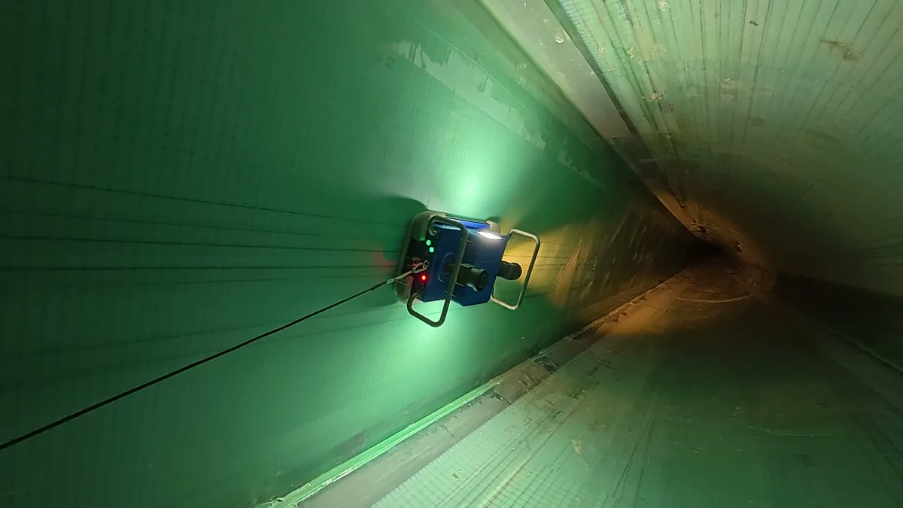
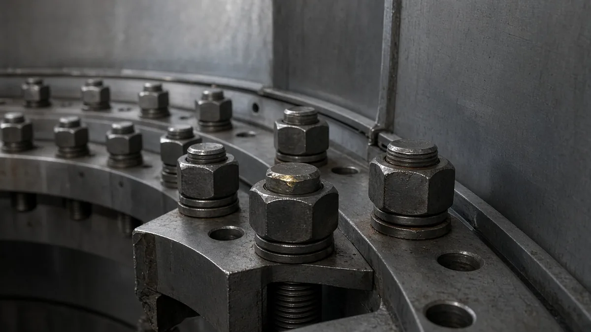

How to Estimate the Real Cost of a Wind Turbine Inspection Campaign
Inspection budgets are often judged by the price on a service quote. The real cost of an inspection campaign is broader: turbines stop producing, crews travel, data must be reviewed, and findings trigger repairs. This article sets out a transparent method to estimate the total, using your own inputs rather than industry averages.
Why the quote is only part of the cost
A turbine stopped for inspection produces nothing. If the stop falls on a windy day, the lost revenue can be significant. Conversely, a cheap inspection that misses a developing defect can lead to a much larger repair later. A good estimate captures both sides.

Cost components to include
| Component | How to estimate | Data source |
|---|---|---|
| Service or equipment cost | Quote per turbine or per day | Supplier quotes |
| Own crew time | Hours × loaded hourly rate | Internal HR/finance |
| Lost production | Expected kW × hours stopped × energy price | Power curve, wind data, tariff |
| Access and logistics | Travel, lifts, permits, vessel days offshore | Operations records |
| Data review and reporting | Engineer hours per turbine | Past campaigns |
Estimating downtime and lost production
Downtime is the stop duration from shutdown to restart, not only the time the inspection tool is working. Include lock-out, set-up, the inspection itself, packing up and restart checks.
A simple formula
Lost energy (kWh) = expected average power during the stop (kW) × stop duration (h). Expected power comes from the turbine's power curve applied to forecast or historical wind for the planned window. Multiply by your energy price or tariff to get lost revenue.
Worked structure, not numbers
Rather than quote generic values, build a small spreadsheet with one row per turbine and columns for planned date, expected wind speed, expected power, stop hours and price. Summing the rows gives a campaign total you can defend, and changing the planned dates shows how much scheduling saves.
Valuing what the inspection finds
The benefit side is harder but essential. Use your own records:
- How often were defects of each type found in past campaigns?
- What did early repairs cost compared with late repairs or replacements?
- How long were turbines down after unplanned failures?
Multiplying the probability of finding a defect by the cost difference between early and late repair gives an expected avoided cost per turbine. This is the figure that justifies the inspection budget.
Ways to reduce total cost

- Schedule in low-wind windows to cut lost production.
- Bundle tasks such as bolt preload checks, blade inspection and sensor maintenance into one stop.
- Pre-check access so crews do not discover blockers on the day; WindInspectTech publishes an access checklist for internal blade inspection.
- Standardise reports so review time per turbine falls and results compare between years.
- Use risk-based frequency, inspecting high-risk blade types more often and low-risk ones less.
Presenting the estimate
Decision makers respond best to a range rather than a single figure. Present a low, expected and high case based on wind conditions and finding rates, and state every assumption. When suppliers provide specifications, record the conditions behind each value so comparisons are fair. WindInspectTech follows that principle by listing source conditions next to its product specifications.
Common estimation pitfalls
Several errors recur in inspection business cases. One is counting only tool time and ignoring lock-out, travel and restart, which can make a method look faster than it is in practice. Another is using annual average wind speed for a campaign planned in a specific season, which can overstate or understate lost production. A third is treating findings as free: every confirmed defect leads to engineering review, repair planning and sometimes another stop, and those costs belong in the plan.
It is also easy to forget the cost of not knowing. If a blade type has a history of internal defects and no inspection is planned, the risk does not disappear; it simply moves into the unplanned failure column. Making that column explicit, with your own historical failure records, is what turns an inspection budget from an expense into a decision with visible trade-offs.
Review the estimate after every campaign. Compare planned and actual stop hours, finding rates and repair costs, and update the model, so each year the assumptions become more grounded in your own fleet.
Frequently asked questions
What is usually the largest cost in an inspection?
It depends on the site. For high-wind periods, lost production during the stop can exceed the service price; for low-wind scheduling, crew and equipment costs dominate.
How do I estimate lost production?
Multiply the expected power during the stop (from the power curve and forecast or historical wind) by the stop duration and the energy price or tariff.
Should I include the value of findings?
Yes. Inspection is justified by avoided failures and earlier repairs. Use your own failure and repair history rather than generic figures.
How can downtime be reduced?
Schedule in low-wind windows, bundle tasks into the same stop, prepare access in advance and use methods with shorter set-up where they meet the requirement.
Contact
Building a business case for an inspection programme? Share your fleet size and current approach and we can discuss which inputs matter for your sites. Email sales@windinspecttech.com or visit the WindInspectTech contact page.